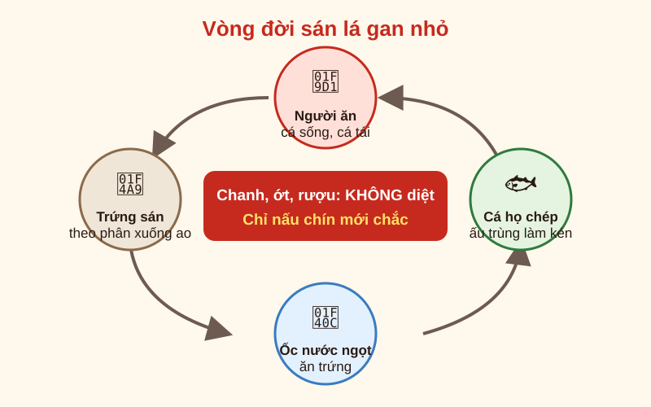

An toàn thực phẩm
Đĩa gỏi cá sống và con sán dài chưa tới 1 cm: chanh, ớt, rượu đều không giết được

Em biết nhiều bác mê gỏi cá lắm, cá trắm, cá mè thái mỏng, cuốn lá sung, chấm nước sốt thính… ngon ơi là ngon. Nhưng bài này em phải viết nghiêm túc một tí, vì nó liên quan đến cái gan cái mật của cả nhà mình đấy ạ.
Con sán bé tí mà xếp ngang thuốc lá
Trong cá nước ngọt có thể có sán lá gan nhỏ, con trưởng thành dài chưa tới 1 cm. Tổ chức Nghiên cứu Ung thư Quốc tế (IARC) xếp nó vào Nhóm 1 – nhóm “chắc chắn gây ung thư ở người”, cùng nhóm với thuốc lá và amiăng.
- Ở Thái Lan, Lào, Campuchia và miền Trung, miền Nam nước mình là loài Opisthorchis viverrini.
- Miền Bắc có “anh em họ” là Clonorchis sinensis, cùng đường lây, cùng hậu quả.
Nó đi từ đâu vào bụng mình?
- Trứng sán theo phân người, phân chó mèo xuống ao hồ.
- Ốc nước ngọt ăn phải trứng.
- Ấu trùng chui ra khỏi ốc, chui vào thịt cá họ chép (cá mè, cá diếc, cá trôi, cá chép…) rồi nằm im trong cái kén.
- Người ăn cá sống hoặc tái, kén nở trong ruột, sán bò ngược lên đường mật và ở lì đó.
Vì sao đáng sợ?
- Sán sống trong đường mật hàng chục năm.
- Phần đông người nhiễm chẳng thấy triệu chứng gì, nên chẳng ai đi khám.
- Nó bám, hút, gây viêm kéo dài, làm xơ quanh ống mật.
- Nhiễm lâu năm là nguyên nhân đã được xác định của ung thư đường mật – loại ung thư hay phát hiện muộn, khó chữa.
Vùng Đông Bắc Thái Lan, nơi món gỏi cá sống rất phổ biến, có tỷ lệ ung thư đường mật thuộc hàng cao nhất thế giới.
Những thứ KHÔNG diệt được kén sán
- Chanh, giấm
- Ớt, tỏi, mù tạt
- Rượu mạnh uống kèm
- Muối chua, ủ mắm vài ngày
Chanh giấm làm thịt cá trắng ra, săn lại, nhìn như chín – nhưng cái kén bên trong vẫn sống nhăn các bác ạ. Em thấy câu “có rượu là sát trùng” là câu nguy hiểm nhất trên mâm gỏi.
Thế phải làm sao?
- Nấu chín kỹ cá nước ngọt. Đây là cách duy nhất đáng tin.
- Dao, thớt làm cá sống để riêng, rửa sạch, không dùng chung với đồ ăn chín.
- Không cho chó mèo ăn cá sống – chúng cũng là nơi giữ vòng đời con sán.
- Nhà nào đã ăn gỏi cá nhiều năm thì đi xét nghiệm phân tìm trứng sán, đơn giản và rẻ. Bệnh chữa được bằng thuốc theo chỉ định của bác sĩ. Nhưng uống thuốc xong lại ăn gỏi tiếp thì… lại nhiễm như cũ 😔
Ngon thì ngon thật, nhưng thương cái gan nhà mình thì mình chuyển sang cá hấp, cá nướng nhé các mom. Em hứa cá nướng chấm mắm gừng cũng ngon chẳng kém đâu 😘
Em tham khảo: Ý tưởng từ bài chia sẻ của anh Dinh Phong Nguyen (facebook.com/aaron.amrak); IARC Monographs Volume 100B – Biological Agents (2012).
Kinh nghiệm và kiến thức bếp nhà, em viết lại theo cách hiểu của em – không thay lời khuyên của bác sĩ, chuyên gia dinh dưỡng. Thấy chỗ nào chưa đúng, các bác nhắn em sửa nhé.